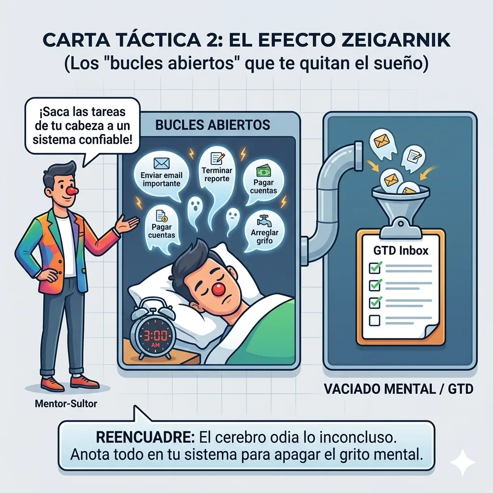

De la Resaca Digital a la Autonomía • Matías
"Tu principal obstáculo hoy no es la falta de capacidad, sino la evasión activa. Confundes 'prepararte' con 'hacer' (ver videos de matemáticas en lugar de ejercitar, o leer sobre hábitos en lugar de practicarlos). Para destrabar tu autonomía, pasamos a la acción directa y al fin del empuje externo."
Transitando de la fase de fricción y control externo hacia la normalización y la confianza personal mediante micro-acciones medibles y honestidad diaria.
Evaluación integral basada en las bitácoras y registros del Proyecto Matías. Nos enfocamos en potenciar sus talentos motores y en cercar los riesgos de procrastinación digital.
El restablecimiento de tu movilidad y privilegios digitales no depende de promesas ni del paso del tiempo, sino de acciones medibles en tu día a día.
Requisa de teléfonos móviles personales. Bloqueo total de redes sociales. Enfoque en tolerancia al aburrimiento y rutina análoga.
Devolución del smartphone con control parental estricto de tiempo de uso y bloqueo de redes sociales (Instagram/TikTok). El teléfono es un privilegio condicionado; tu prioridad absoluta es sostener tu crecimiento personal.
Restablecimiento total de privilegios bajo acuerdos de uso semanales, autorregulación y supervisión aleatoria.
| Hora | Lunes | Martes | Miércoles | Jueves | Viernes | Sábado | Domingo |
|---|
Mati, este tablero es tu escudo contra la parálisis. La columna "En Ejecución" tiene un límite estricto de 2 tareas simultáneas. Termina una antes de empezar otra.
Cada herramienta tiene un objetivo y un soporte físico o digital asociado. Úsalas diariamente para estructurar tu rutina.
Sirve para que no acumules deberes en tu cabeza y te congeles por abrumo. Escribe la tarea y ponla en la pared. Limita tu columna "En Ejecución" a un máximo de 2 tareas simultáneas.
El registro de tus acciones diarias. Las tareas cumplidas y la honestidad son depósitos. Los ocultamientos y las faltas a la verdad son giros. Mantener saldo positivo es tu llave para el teléfono.
Para evitar bloquearte frente a cuadernos perfectos. Escribe resúmenes de solo 5 líneas por tema. Pide a un compañero o profesor capturas de pizarra si es necesario. Lo importante es tener la información de forma simple.
Rutinas estructuradas en papel y en tu pared. El tiempo que antes se perdía en redes sociales ahora se asigna de manera visual a bloques específicos de deporte, estudio y ocio activo.
El desarrollo de tus proyectos de pintura y dibujo y tus prácticas de vóley. Actividades creativas y físicas estructuradas que regulan el TDAH de forma sana, alejando a tu cerebro del letargo digital.
Un bloque semanal no negociable de mínimo 1 hora donde auditas tus sistemas (Kanban, planificador), reflexionas sobre tus decisiones en el hogar y planteas tus propias mejoras de gestión sin esperar a ser interrogado.
Tu herramienta de Inteligencia Artificial en el computador recién recuperado. Sirve para romper la inercia del "Paso Cero", hacer resúmenes de bajo roce de 5 líneas, simuladores de exámenes interactivas y generar ideas para tus talleres de arte y vóley.
¿Te cuesta empezar a hablar o sientes que te vas a bloquear? Selecciona la situación y ensaya el guion exacto.
El secreto del Efecto Zeigarnik: Cerrar los bucles antes de dormir.
Sientes ganas de mirar el suelo, quedarte mudo o inventar una excusa. Frena en seco. Reconoce: "Me estoy bloqueando".
No te des la vuelta en silencio. Di en voz alta: "Papá, en este momento me cuesta pensar claro. ¿Podemos hablarlo hoy a las [18:00]?".
Durante la pausa está prohibido usar pantallas. Toma agua, camina, o escribe en un papel las 2 cosas que quieres decir.
A la hora fijada, acércate tú a tu papá: "Papá, son las [18:00], hablemos de lo pendiente". Esto suma depósito triple a tu confianza.
Cada herramienta resuelve una trampa mental específica (la vergüenza, el rodeos, el 'no sé', el silencio o la rigidez defensiva).
El "Área Oculta" es todo aquello que tú sabes que hiciste o sientes pero que intentas esconder de tus padres por miedo a su reacción o por vergüenza. El cerebro gasta muchísima energía intentando sostener mentiras o silencios. Cuando abres la compuerta y dices la verdad, la culpa desaparece instantáneamente y el vínculo se fortalece.
Cuando sientas el impulso de esconder una mala nota o inventar que hiciste una tarea cuando no es verdad, frena y aplica la Regla de los 10 Segundos: suelta la verdad de golpe antes de que tu mente fabrique una excusa.

La Ventana de Johari: Abrir el Área Oculta para liberar la mente y construir confianza sólida.
Muchas veces te quedas callado o respondes con enojo porque sientes que te atacan o que "todos están equivocados". El método SBI te da una estructura blindada para expresar lo que sientes sin atacar a nadie:
• S (Situación): El momento exacto ("Ayer cuando estábamos revisando las tareas...").
• B (Comportamiento): El hecho observable sin juicios ("...me quedé en silencio y no respondí a tu pregunta...").
• I (Impacto): Lo que sentiste por dentro ("...porque me sentí muy abrumado y con miedo a que te decepcionaras de mí").
Usa la fórmula SBI cuando sientas que no sabes cómo explicar por qué te bloqueaste o cuando algo en el hogar te moleste, en lugar de cerrarte en el mutismo.

Feedback SBI: Situación, Comportamiento e Impacto para un diálogo sin defensas ni agresividad.
El cerebro inseguro suele dar 20 rodeos, armar historias largas o enredarse en justificaciones para suavizar una mala noticia. La Pirámide de Minto enseña que la gente valiente y madura pone la conclusión en la primera frase:
• "Papá, tengo una nota roja en Historia y necesito que organicemos el repaso." (Directo, maduro, sin rodeos).
• Después de la primera frase, explicas con calma los detalles.
Aplica la Regla de la Primera Línea: di lo más importante en los primeros 5 segundos de la charla. Tu papá agradecerá la frontalidad y el problema se resolverá en minutos.

Pirámide de Minto: Conclusión primero, argumentos y detalles estructurados después.
Cuando tu papá te pregunta: "¿Por qué no abriste el cuaderno ayer?", la respuesta automática suele ser "No sé". Pero el "no sé" es falso; siempre hay un motivo real oculto. Al preguntarte 3 a 5 veces "¿Por qué?", llegas a la causa raíz:
1. ¿Por qué no lo abrí? -> Porque me dio lata.
2. ¿Por qué me dio lata? -> Porque la materia es muy larga.
3. ¿Por qué se siente larga? -> Porque no entiendo la primera página.
4. ¿Por qué no pregunté? -> Porque me dio vergüenza que pensaran que no sé.
Causa Raíz Real: Miedo al qué dirán. Al admitir la raíz, ¡la solución es pedir ayuda!
Queda erradicado el "no sé" en las conversaciones familiares. Si no sabes la respuesta en el segundo, di: "Papá, déjame pensar 30 segundos en los porqués reales para decírtelo con honestidad".

Los 5 Porqués: Ir al fondo del problema para desarmar la evasión superficial.
La psicología demostró que el cerebro humano odia las historias inconclusas. Cuando evades una conversación difícil y no la retomas, esa charla pendiente se queda dando vueltas en tu mente como un fantasma (te da insomnio, mal genio y miedo a que te pillen). La única forma de apagar la alarma mental no es esconderse, sino cerrar el bucle hablando.
Pacto de Cierre Diario: Nunca te vayas a dormir con una conversación pendiente o evadida con tu papá o mamá. Si hubo tensión durante el día, acércate antes de las 21:00 y di: "Papá, cerremos lo que pasó hoy para estar tranquilos".

Efecto Zeigarnik: Cerrar las tareas y conversaciones inconclusas para liberar la memoria RAM cerebral.
El Modelo GROW te ayuda a estructurar tus reuniones con papá para que no sean un interrogatorio, sino una sesión de trabajo de socios:
• G (Goal - Meta): ¿Qué queremos lograr esta semana? (ej. pasar la prueba de Historia sin estrés).
• R (Reality - Realidad): ¿Dónde estoy parado hoy? (ej. tengo 2 resúmenes atrasados).
• O (Options - Opciones): ¿Qué 2 opciones propongo yo? (ej. Opción A: 15 min hoy y 15 min mañana; Opción B: pedir ayuda con Antigravity en el computador).
• W (Will - Compromiso): ¿Qué voy a hacer yo hoy a las 17:00 con temporizador?
En tu Cita Semanal de Gestión, no esperes a que te hagan preguntas. Abre tu cuaderno y di: "Papá, evalué mi semana con GROW: mi meta es X, mi realidad es Y, y te propongo estas 2 opciones".

Modelo GROW: Meta, Realidad, Opciones y Compromiso para resolver problemas con autonomía.
El instinto infantil es defenderse ante cualquier crítica diciendo: "es que tú no entiendes" o "siempre me retan a mí". La Evaluación 360 enseña que los líderes y deportistas de alto rendimiento buscan el feedback porque saben que los ojos de los demás ven puntos ciegos que uno mismo no puede ver.
Regla de los 2 Minutos de Escucha: Cuando tu papá o mamá te estén dando una retroalimentación sobre tu actitud o hábitos, guarda silencio absoluto por 2 minutos. No interrumpas, no pongas cara de molestia. Escucha, procesa y luego responde con Pirámide de Minto o SBI.

Evaluación 360: El espejo del feedback constructivo para derribar puntos ciegos y madurar.
"Mati, el desintoxicarse de la pantalla no es un castigo, es la oportunidad de recuperar el control de tu atención, divertirte con tu pintura y dibujo, y demostrar tu tremendo valor."
— ADMINISTRACIÓN HUMANA